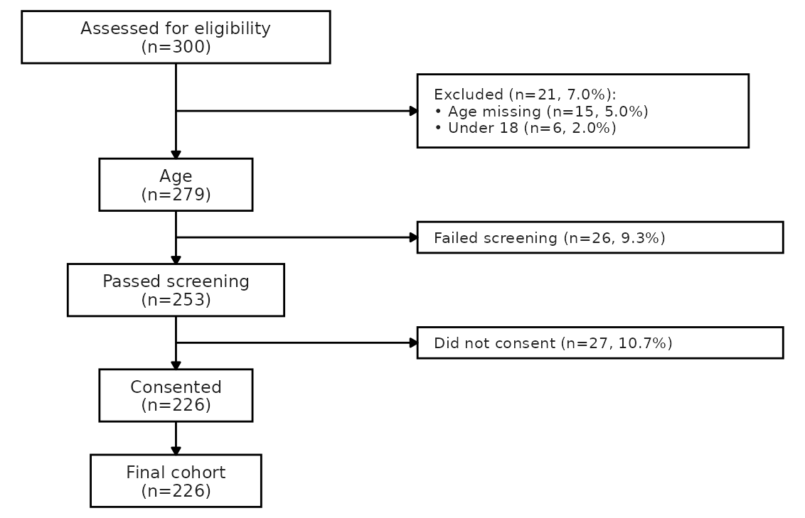
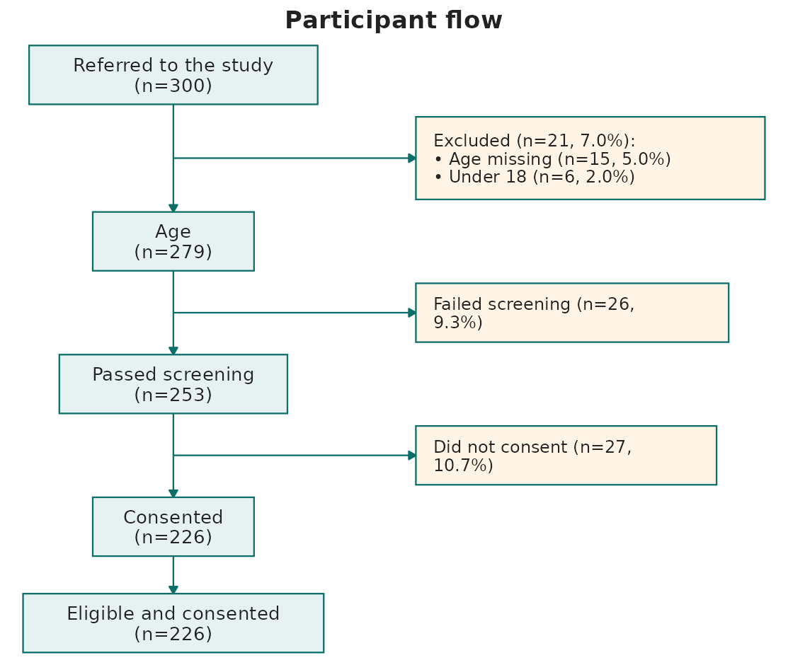
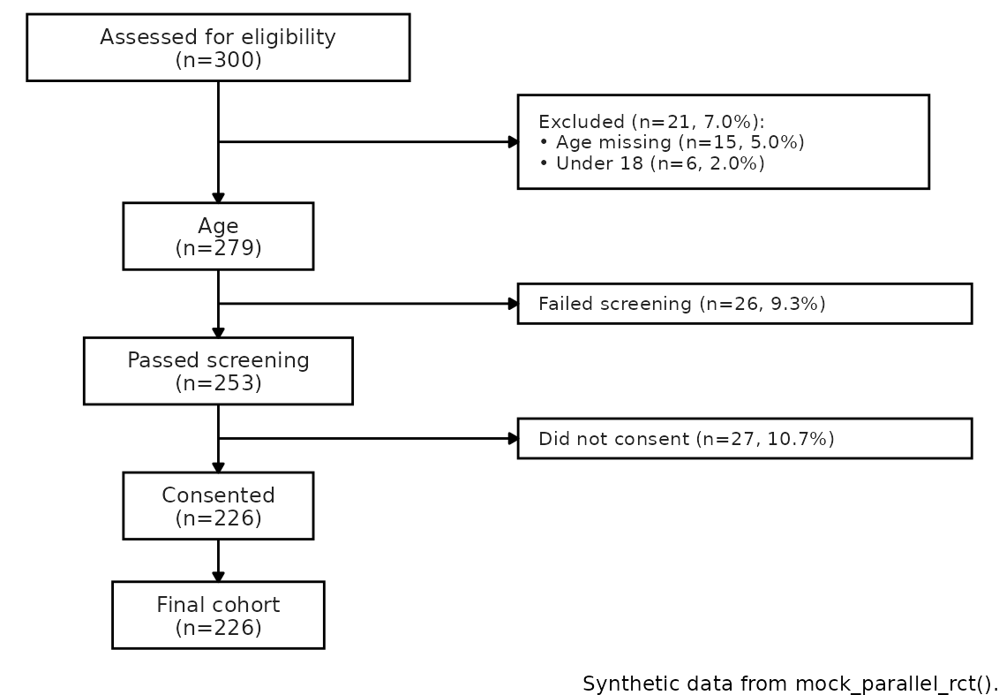
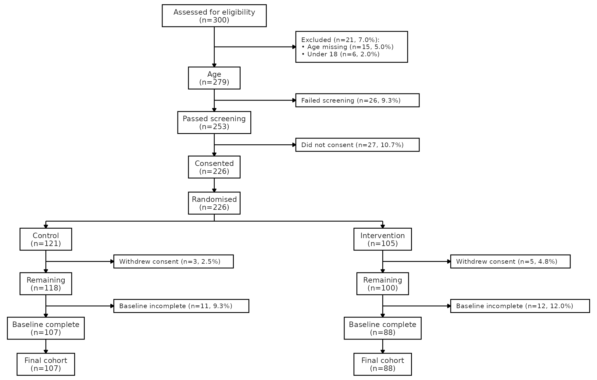
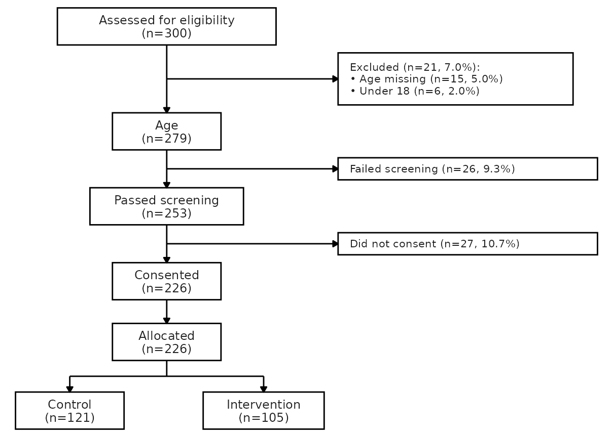
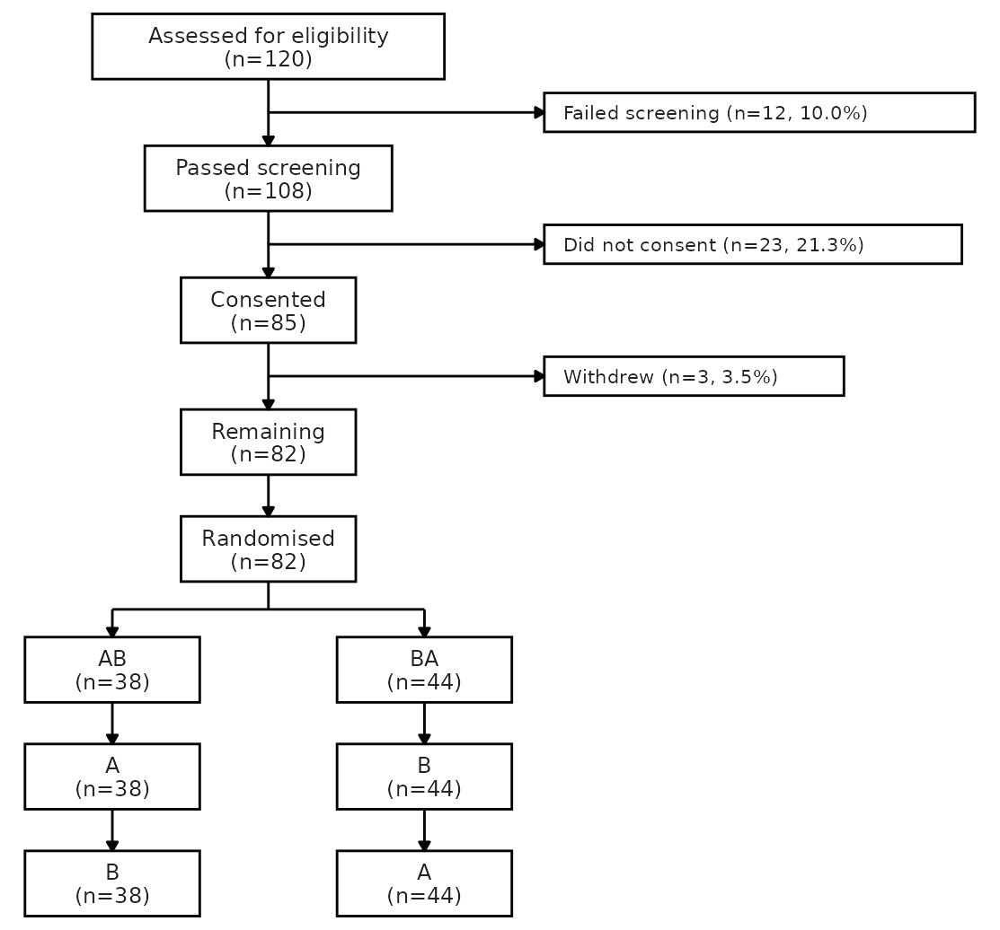

library(cohortflow)
dat <- mock_parallel_rct(n_participants = 300, seed = 2024)as_consort_diagram() draws a CONSORT-style flow diagram
from a cf_flow. It is built from the same attrition tibble
as as_attrition_table(), so the numbers in the diagram and
the table always match. The result is a ggplot, so it prints anywhere a
plot does and can be saved at publication quality with
save_consort_diagram().
Reading the diagram
crit <- cf_criteria() |>
include(~ !is.na(age), label = "Age recorded", reason = "Age missing", category = "Age") |>
include(~ age >= 18, label = "Aged 18 or over", reason = "Under 18", category = "Age") |>
include(~ eligible_screen, label = "Passed screening", reason = "Failed screening") |>
include(~ !is.na(consent_date), label = "Consented", reason = "Did not consent")
flow <- apply_criteria(dat, crit, id = "participant_id")
as_consort_diagram(flow)
- The top box is everyone assessed (
assessed_label). - Each main box below it is a step, or a category of consecutive steps, showing how many remain after it.
- The side box on the arrow into a main box shows how many that step removed, as a count and a percentage of those entering it. For a category, the box lists each step’s own count.
- The last box is the final cohort (
final_label).
show_categories = FALSE draws every step as its own
box.
Which text goes in which box
Each number sits beside text that describes those people, so a box never says “Withdrew consent (n=226)” about the people who stayed:
| Step | Main box (number remaining) | Side box (number removed) |
|---|---|---|
include(~ age >= 18, "Aged 18 or over", reason = "Under 18") |
Aged 18 or over | Under 18 |
include() with no reason
|
its label | Excluded |
exclude(~ withdrew, "Withdrew consent") |
Remaining (remaining_label) |
Withdrew consent |
Steps sharing a category
|
the category | each step’s reason, listed |
An inclusion step’s label says who is kept, so give
it a reason that says who is removed.
Inside a category the reasons are listed, and a step without one would
be listed under its label (“Aged 18 or over (n=6)” for six people under
18). as_consort_diagram() warns when that happens.
Styling
The defaults suit journal submission: black outlines, no fill, 9-point text. Every element can be changed:
as_consort_diagram(
flow,
title = "Participant flow",
main_fill = "#E6F2F1",
excl_fill = "#FFF4E5",
border_colour = "#0B6E69",
border_linewidth = 0.4,
text_size = 10,
wrap_width = 26,
assessed_label = "Referred to the study",
final_label = "Eligible and consented"
)
| Argument | Controls |
|---|---|
main_fill, excl_fill
|
Fill of the main and side boxes (default none) |
border_colour, border_linewidth
|
Box outlines and arrows |
text_size, text_colour,
font_family
|
Box text |
title, title_colour
|
Optional title above the diagram |
wrap_width |
Wrap long labels at this many characters |
digits, big_mark
|
Percentage decimals and the thousands separator
("1,234") |
arrow_size |
Arrowhead length, in inches |
Because the diagram is a ggplot, ggplot2 layers and themes can be added:
as_consort_diagram(flow) +
ggplot2::labs(caption = "Synthetic data from mock_parallel_rct().")
Randomised trials
Add a randomise() step and the diagram splits there.
Everything before it is one shared trunk. At the randomisation box it
divides into one column per arm, and every later step is counted
separately within each arm, which is how CONSORT asks for
post-allocation losses to be reported.
crit_rct <- crit |>
randomise(by = "participant_id", arms = "arm") |>
exclude(~ withdrew, label = "Withdrew consent") |>
include(~ baseline_complete, label = "Baseline complete", reason = "Baseline incomplete")
flow_rct <- apply_criteria(dat, crit_rct, id = "participant_id")
as_consort_diagram(flow_rct)
The arm column comes from the arms argument of
randomise(). To split on a different column, pass
branch_by.
Splitting without a randomisation step
Without randomise(), branch_by splits the
final cohort into one box per value of a column. That suits a cohort
study reported by exposure group, or a trial whose allocation happened
before the data begins:
as_consort_diagram(flow, branch_by = "arm", final_label = "Allocated")
Rows where the branch_by column is NA get
their own box, labelled by branch_na_label.
Crossover trials
In a crossover trial every participant receives each treatment in
turn. stage_by adds one box per period beneath each
sequence, and stage_label_by labels each period with the
treatment given in it. Each participant has one row per period, so
count_by makes every box count participants. It names a
level of the flow’s hierarchy, so the flow is built with
hierarchy =:
co <- mock_crossover(n_participants = 120, seed = 11)
flow_co <- apply_criteria(
co,
cf_criteria() |>
include(~ eligible_screen, label = "Passed screening", reason = "Failed screening") |>
include(~ !is.na(consent_date), label = "Consented", reason = "Did not consent") |>
exclude(~ withdrew, label = "Withdrew"),
id = "event_id",
hierarchy = cf_hierarchy(participant = "participant_id")
)
as_consort_diagram(
flow_co,
branch_by = "sequence",
stage_by = "period",
stage_label_by = "arm",
count_by = "participant_id",
final_label = "Randomised"
)
The trunk, sequence and period boxes all count people, so they add
up. A participant counts as removed at the step where they lose their
last period. Without count_by, every box would count
participant-periods (two per person).
Saving for publication
save_consort_diagram() writes PNG, TIFF, JPEG, PDF, SVG
or EPS, choosing the format from the file extension. By default the page
is sized from the diagram’s layout so the text fits its boxes, at 300
dpi for raster formats:
diagram <- as_consort_diagram(flow_rct)
save_consort_diagram(diagram, "figure1.pdf") # vector, fonts embedded
save_consort_diagram(diagram, "figure1.tiff", dpi = 600) # many journals want TIFF
save_consort_diagram(diagram, "figure1.svg") # editable in Inkscape/Illustrator
save_consort_diagram(flow_rct, "figure1.png") # a flow works too, with default stylingGive only width (or only height) to fix one
dimension and keep the aspect ratio. Text is always drawn at
text_size points, so to fit a wide diagram, such as a
two-arm trial, into a single journal column, build it with a smaller
text_size rather than shrinking the page:
small <- as_consort_diagram(flow_rct, text_size = 7)
save_consort_diagram(small, "figure1-column.pdf")In R Markdown or Quarto, print the diagram in a chunk and set
fig-width and fig-height to roughly the size
save_consort_diagram() would choose.
Under the hood
The box and arrow positions are attached to the diagram, in case you want to draw it some other way or check the layout:
layout <- attr(as_consort_diagram(flow_rct), "consort_layout")
names(layout)
#> [1] "main_boxes" "excl_boxes" "main_arrows"
#> [4] "excl_arrows" "branch_boxes" "branch_arrows"
#> [7] "branch_connectors" "branch_excl_boxes" "branch_excl_arrows"
#> [10] "stage_boxes" "stage_arrows" "has_title"
#> [13] "text_size"
head(layout$main_boxes[, c("label", "x", "y", "w", "h")])
#> label x y w h
#> 1 Assessed for eligibility\n(n=300) 0.24 0.893 0.282 0.094
#> 2 Age\n(n=279) 0.24 0.627 0.140 0.094
#> 3 Passed screening\n(n=253) 0.24 0.437 0.198 0.094
#> 4 Consented\n(n=226) 0.24 0.247 0.140 0.094
#> 5 Randomised\n(n=226) 0.24 0.093 0.140 0.094